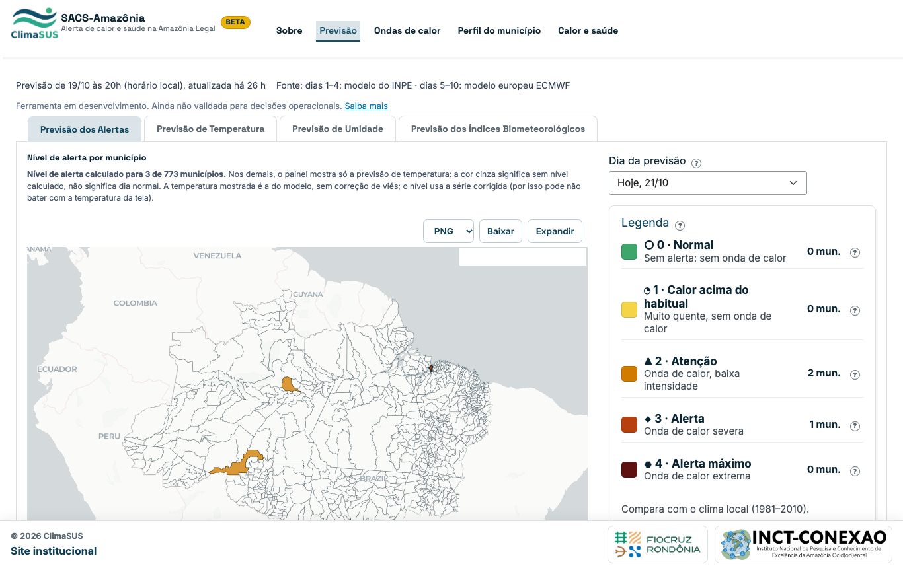
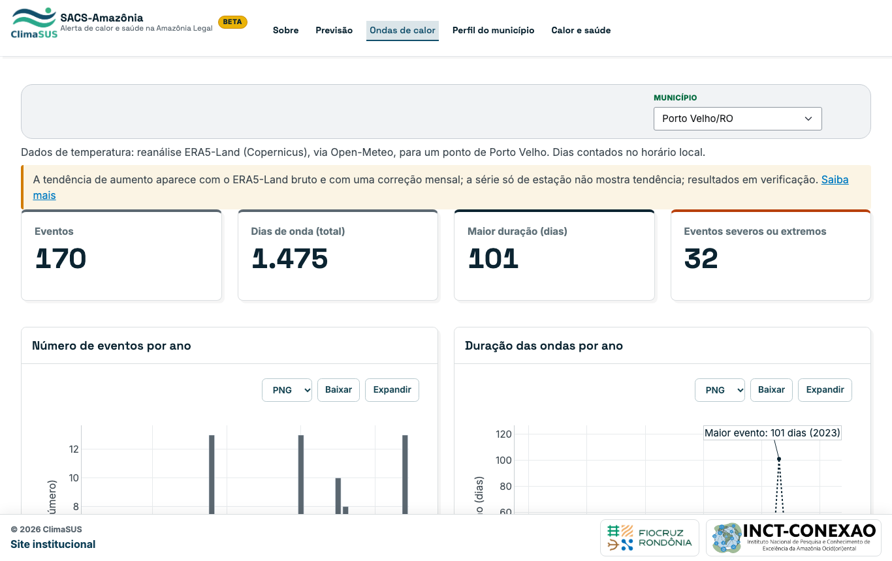
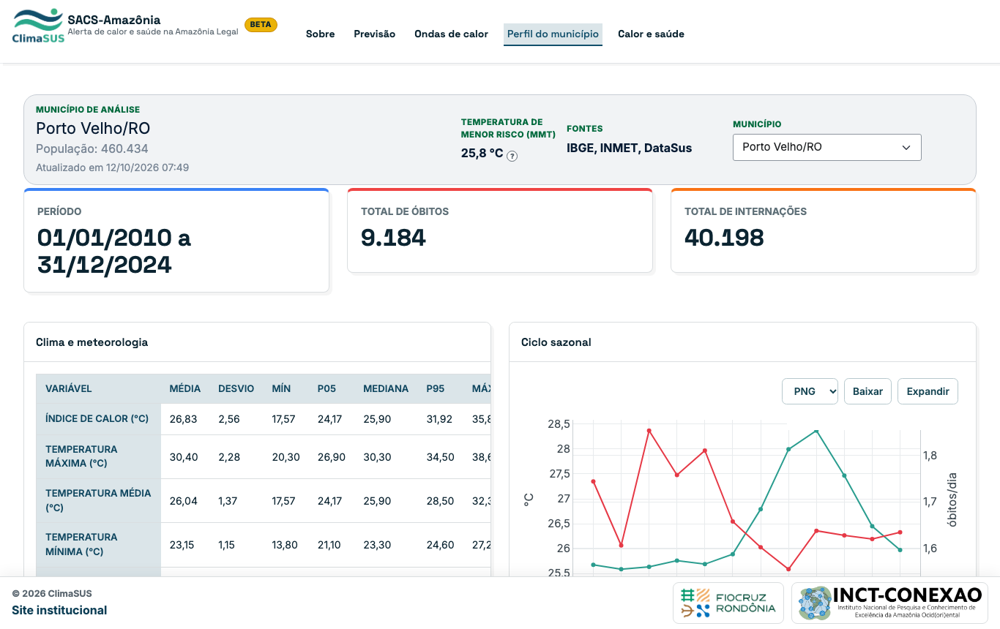
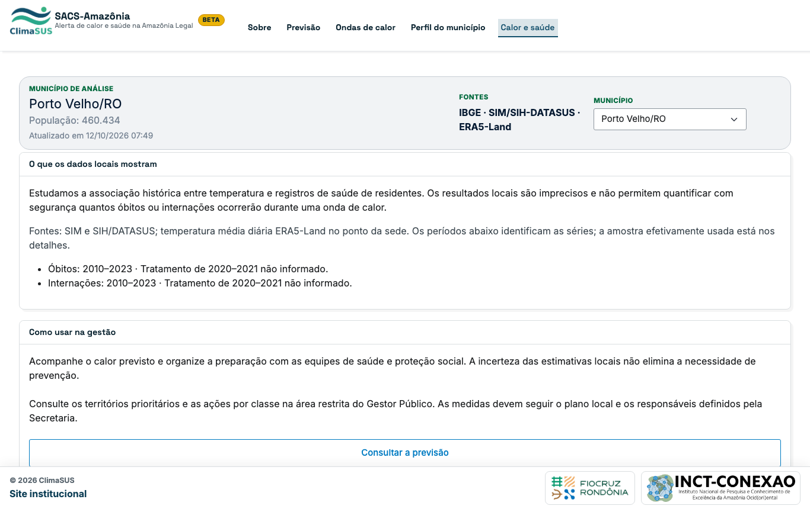
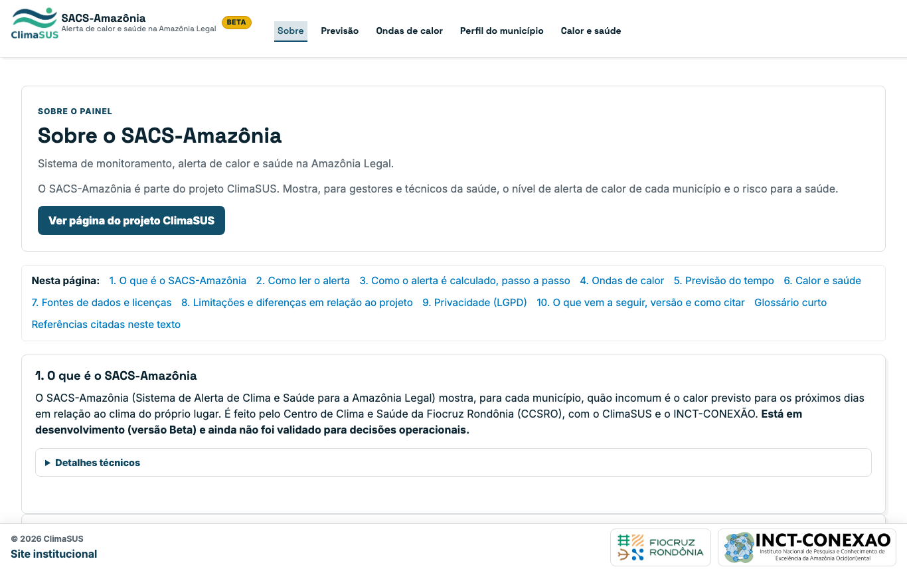

SACS-Amazônia
Alerta de calor e saúde na Amazônia Legal: previsão de ondas de calor, perfil dos municípios e a relação entre calor e saúde.
Ferramenta em desenvolvimento. Ainda não validada para decisões operacionais. As capturas abaixo mostram o painel público.
O painel





Como ver o painel ao vivo
O painel roda no computador de desenvolvimento e ainda não tem endereço público fixo. Para abrir localmente, a partir do repositório do projeto:
SACS_MODO=publico PAINEL_DADOS=dados_publico uv run shiny run app.py --port 8001Depois, acesse http://127.0.0.1:8001.